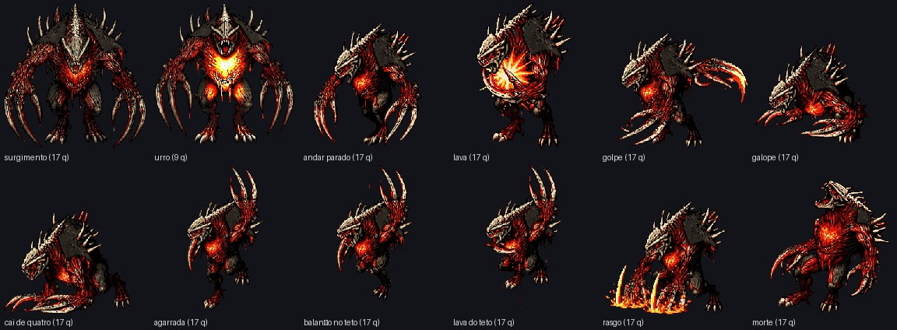

24/11. Opção B: refinar e escalar, com uma assinatura nova por fase. As partes 1 a 3 já estão aprovadas por você aprovado. As partes 4 a 6 são rascunho meu para você analisar rascunho. A análise do que existe hoje está na folha da análise.
| Pergunta | Escolha |
|---|---|
| Como consertar | C: consertar os defeitos e refazer a ronda com animação nova. Uma ordem de ataques fixa por fase, uma trava por fase e uma vida nova. |
| A ambição | B: refinar e escalar. Uma assinatura por fase, e o breu é o ápice. |
| O tipo do bicho | Fica demônio de carne e osso, sem nada biomecânico. "a besta está presa por um motivo". |
| O tema | Perto da (c), como tempero: a luz e a energia são dela. O core, a luz e o breu são o fio da luta. |
| A duração | Mais ou menos a do Guardião. Uma trava por fase, e o breu é a fase mais longa (≈30/30/40%). |
| As assinaturas | Mecânicas que o jogo ainda não tem: a sede, a volta, os olhos no escuro e o coração para. |
| O visual | Escurecer o osso e o vermelho, deixando acesos só o core, a lava e a boca. As garras pensadas para o tamanho em que ela aparece no jogo. |
| Já usado (fica de fora) | Ninguém usa (onde entra) |
|---|---|
| Leque com brecha (Torre, Guardião), anel (aranha, flak), espiral e faixa segura (enguia), coluna do teto (Guardião, casulos), feixe varrendo (Serpente), bote mirado no passado (quase todos), parede que aperta, lacaios, o eco do próprio caminho, lentidão (esporos), escuridão (o breu de hoje) | Absorver e devolver os tiros do jogador: a sede Atacar por trás, do lado esquerdo (a nave só atira para a direita): a volta Isca com regra de leitura: os olhos no escuro Mexer no tempo: o coração para |
O PixelLab faz o movimento do corpo, e o código só leva ela por um caminho apoiado no mundo, como o chão, a parede, o teto ou a borda. Nada desliza.

| Clipe | Para quê | Ferramenta |
|---|---|---|
| Salto para trás | voltar para a direita depois do golpe; acaba o deslizar | esqueleto (o primeiro teste) |
| Escalada | subir a parede da esquerda e descer a da direita; gerada como rastejar e girada 90°, que é exato em pixel | esqueleto |
| Troca de mão no teto | atravessar o teto na volta | esqueleto |
| Quinas (chão→parede, parede→teto) | as viradas da volta | PixMiniMax, com a pose final presa |
| Ataque de canto | o golpe para dentro da sala, saindo da quina | PixMiniMax |
| A sede: abrir / devolver | o peito abre e bebe; o tranco que solta tudo de volta | PixMiniMax |
| Salto de parede a parede | o borda a borda, com o corpo esticado e as garras à frente | esqueleto |
| O coração para | ela crava as garras no próprio core e o aperta, e depois solta | PixMiniMax |
O esqueleto acerta a pose e mantém o desenho dela, e ainda dá a posição da ponta de cada garra em todo quadro, que vira a hitbox. O PixMiniMax fica com os gestos grandes, que ele ganhou em setembro. Custo: perto de 120 gerações (temos 2.537). A recoloração (osso e vermelho mais escuros) vem no fim, com o mesmo mapa de cor em todos os clipes.
| Defeito (seção da análise) | Conserto |
|---|---|
| A garra passa pela nave (§1) | Uma hitbox por quadro para cada garra, nos perigos, medida na arte (ou tirada do esqueleto nos clipes novos). O corpo fere só onde há massa. O salto pode ir até o teto, e a linha de parada fica fixa longe da parede. A prova: a nave no canto e a nave que sobe durante a corrida levam o golpe. |
| O core flutua nas costas no galope (§2) | Uma tabela da posição do core por quadro em cada clipe. A luz e a caixa do core seguem o peito. |
| Duas bolas na lava do teto (§3) | Cortar o clipe antes da bola pintada, como no chão (no 14). Se o corte quebrar o laço, apagar a bola por máscara e provar que o resto ficou idêntico. |
| A ronda desliza (§4) | Some com a parte 3: salto para trás, escalada, troca de mão. |
| A onda de fogo do rasgo não fere (§5) | Regra: o que está pintado fere. A onda ganha hitbox que segue a faixa pintada no chão, combinando com a lava que domina o chão. |
| O golpe invisível no breu (§6) | Em todo estado de ataque o core fica no nível de aviso, nunca no pulso lento. |
| Parada, só o ombro é sólido (ref.) | O corpo segura bala no tronco e na cabeça. Os braços e as pernas continuam vazados, mas as garras ferem quando atacam. |
| Clara demais / garras pontilhadas (§7) | A recoloração e o teste da redução (parte 3). |
Hoje já existem o 5 (pula para o chefão) e o 6 (abre uma mesa de cartas). Proposta, só em dev e nunca com CTRL:
?fase=besta3&mao=mediana), para os scripts de medição do rebalanceamento entrarem direto.